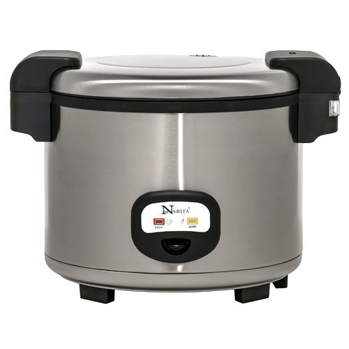

This is a website by Jeremy Cho, a UCSD Data Science undergraduate. I am progressively building a versatile skillset that I can use to explore the field of data science. In my spare time, I like to play games, listen to music, or practice kendo (Japanese swordfighting).
